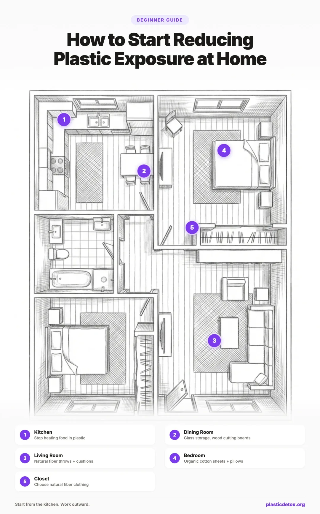

How to Start Reducing Plastic Exposure: A Practical Priority Guide (2026)
Microplastics have been found in human blood, lung tissue, placentas, and even brain tissue. A 2024 study in the New England Journal of Medicine found that people with microplastics in their arterial plaque had a 4.5 times higher risk of heart attack, stroke, or death over 34 months. The evidence is no longer theoretical. Plastic exposure is a real, measurable health concern.
But here is the thing: you do not need to panic, and you do not need to throw away everything you own. The goal is not to live in a plastic free bubble. The goal is to reduce your highest dose exposures first, then work outward at your own pace.
This guide walks you through exactly where to start, what to prioritize, and what can wait.

1. How Plastic Enters Your Body
Microplastics enter your body through three main routes, and understanding them is the key to knowing what to fix first.
Ingestion: What You Eat and Drink
This is the big one. The majority of your microplastic exposure comes from what goes into your mouth. Plastic food packaging, water bottles, takeaway containers, coffee pods, plastic cutting boards, non stick cookware coatings, and even tea bags all contribute. Unfiltered tap water alone contains an estimated 4,000 microplastic particles per liter.
Inhalation: What You Breathe
Synthetic clothing (polyester, nylon, acrylic) sheds microfibers every time you wear, wash, or fold it. These fibers become airborne and mix with household dust. Indoor air typically contains higher concentrations of microplastic fibers than outdoor air because of carpets, curtains, upholstered furniture, and synthetic bedding. You breathe in these fibers all day and all night.
Skin Contact: What Touches Your Body
Intact skin is actually a decent barrier against microplastic particles themselves. The particles are generally too large to penetrate skin. However, chemical additives from plastics (like BPA, phthalates, and UV stabilizers) can absorb through skin, especially in the presence of cosmetics, lotions, and personal care products. This is a real exposure route, but it contributes less total dose than ingestion or inhalation for most people.
2. The Golden Rule: Heat + Plastic = Danger
If you remember only one thing from this entire guide, remember this: heat accelerates plastic leaching dramatically.
A 2021 study in the Journal of Hazardous Materials found that pouring hot liquid (around 85 to 90 degrees Celsius) into a single disposable plastic lined cup released approximately 25,000 microplastic particles per 100 milliliters within 15 minutes. At room temperature, the same cup released a fraction of that.
This is why the first and most impactful changes are all about removing plastic from contact with hot food and hot drinks. You do not need to replace every plastic item in your home. Just start where the heat is.
| Activity | Temperature | Exposure Level |
|---|---|---|
| Microwaving food in plastic | 100+ C | Extreme |
| Hot coffee in plastic lined cup | 85 to 95 C | Very high |
| Cooking in non stick (PFAS) pan | 150 to 250 C | Very high |
| Hot water in plastic kettle | 100 C | High |
| Plastic coffee pod brewing | 90 to 96 C | Very high (billions of nanoparticles) |
| Warm food in plastic container | 40 to 60 C | Moderate |
| Cold food in plastic container | 4 to 20 C | Low |
| Dry goods in plastic container | Room temp | Minimal |
3. The Priority Framework
The biggest mistake people make is trying to change everything at once. That leads to overwhelm, overspending, and burnout. Instead, focus on the changes that deliver the most dose reduction per effort.
Think of it as concentric circles. The inner circle is what touches your food and water (highest dose). The next circle is what you breathe. The outer circle is what touches your skin. You work from the inside out.
4. Tier 1: Food and Water (Start Here)
This is where the most exposure happens and where changes make the biggest difference. Focus on removing plastic from contact with anything you eat or drink, especially when heat is involved.
- Never microwave in plastic. Transfer food to a glass or ceramic dish before microwaving. Even containers labeled "microwave safe" still release microplastics. The label only means the container will not melt or warp. It says nothing about particle or chemical release.
- Never pour boiling water into plastic. This applies to plastic kettles, baby bottles, and plastic water pitchers. Switch to a stainless steel or glass kettle. See our kettle recommendations.
- Stop using plastic coffee pods. A single plastic pod releases billions of nanoparticles into your coffee. Switch to a glass French press, ceramic pour over, or stainless moka pot. Read our plastic free coffee guide.
- Replace non stick (Teflon) cookware. PFAS coatings break down with heat and release toxic chemicals directly into your food. Switch to cast iron, stainless steel, carbon steel, or pure ceramic. Read our cookware comparison guide.
Unfiltered tap water contains an estimated 4,000 microplastic particles per liter. A good filter removes 99% or more of them. This is one of the highest impact, lowest effort changes you can make.
- Reverse osmosis removes 99.9% of microplastics (best option).
- Gravity fed stainless steel filters remove 99.9% with no installation needed.
- Pitcher filters with affinity media like Clearly Filtered remove 99.5%.
- Even a basic activated carbon filter reduces exposure significantly.
- Stop putting hot food into plastic containers. Let food cool first, or use glass or stainless steel containers instead.
- Avoid plastic takeaway containers for hot food. Ask for foil containers at restaurants when possible, or bring your own stainless steel container.
- Bring a reusable cup for hot drinks. A stainless steel or glass travel mug eliminates thousands of disposable cup exposures per year.
- Never put plastic in the dishwasher. The heat and detergent accelerate degradation. If you still have plastic containers, hand wash them in cool water.
- Replace plastic cutting boards. Every knife cut on a plastic board releases microplastic particles directly into your food. Switch to wood (end grain) or bamboo.
- Switch to glass food storage. Glass containers with glass or stainless steel lids are best. Borosilicate glass is oven, microwave, and freezer safe.
- Swap plastic wrap for beeswax wraps or silicone lids. Plastic wrap (cling film) is often made from PVC, one of the more concerning plastics.
- Choose glass or stainless steel water bottles over plastic ones, especially for water that sits in the bottle all day.
- Replace plastic utensils. Use wood, bamboo, or stainless steel cooking utensils instead. Plastic spatulas and spoons degrade with heat over time.
5. Tier 2: What You Breathe
After food and water, the next biggest exposure route is inhalation. Synthetic fabrics shed microfibers constantly, and these fibers accumulate in household dust. You breathe them in throughout the day and night.
You spend roughly 8 hours a night with your face against your bedding. If your sheets, pillowcases, and duvet covers are made from polyester, you are breathing in synthetic microfibers all night long.
- Switch to organic cotton or linen bedding. GOTS certified organic cotton sheets are widely available and produce zero microfiber shedding.
- Prioritize pillowcases first. Your face is pressed directly into your pillow for hours. An organic cotton pillowcase is one of the cheapest, highest impact swaps you can make.
- Consider your mattress. If you are in the market for a new mattress, look for natural latex, organic cotton, or wool. If not, an organic cotton mattress protector creates a barrier between you and a synthetic mattress.
- Vacuum regularly with a HEPA filter. Household dust is one of the main reservoirs for microplastic fibers. A vacuum with a HEPA filter captures rather than recirculates them.
- Ventilate your home. Opening windows regularly reduces the concentration of airborne microfibers. Indoor air typically contains 1.7 to 16.2 fibers per cubic meter. Outdoor air is much lower.
- Consider a HEPA air purifier for bedrooms and living areas. A True HEPA filter captures 99.97% of particles down to 0.3 microns, which includes most airborne microplastic fibers. See our air purifier recommendations.
- Wet mop instead of dry sweeping. Dry sweeping kicks microfibers back into the air. Wet mopping traps them.
A single load of synthetic laundry can release up to 700,000 microfibers into the water supply (Napper & Thompson, 2016). These fibers also become airborne when you dry, fold, and wear synthetic clothing.
- Use a microfiber catching laundry bag (like Guppyfriend) or a washing machine lint filter to trap fibers before they enter the water supply.
- Wash synthetics less frequently and on cooler settings. Lower temperatures and shorter wash cycles release fewer fibers.
- When buying new clothes, choose natural fibers. Cotton, linen, wool, hemp, and silk do not shed microplastics. You do not need to throw away your existing synthetic clothing, but when something wears out, replace it with a natural fiber alternative.
6. Tier 3: What Touches Your Skin
Skin is a better barrier than most people realize. Microplastic particles are generally too large to penetrate intact skin. The concern here is mainly about chemical additives (plasticizers, UV stabilizers, fragrances) that can absorb through skin, especially when dissolved in products like lotions and cosmetics.
- Check your products for "microbeads." Tiny plastic beads were once common in exfoliating scrubs and toothpaste. Many countries have banned them, but they still appear in some products. Look for polyethylene (PE) or polypropylene (PP) in ingredient lists.
- Choose fragrance free products when possible. "Fragrance" or "parfum" on a label can contain phthalates, which are endocrine disruptors used as fragrance carriers. This applies to lotions, shampoos, body wash, and laundry detergent.
- Swap plastic bottles for bar alternatives. Shampoo bars, soap bars, and solid deodorants reduce both plastic packaging and synthetic ingredients. See our clean body recommendations.
- Switch to refillable glass spray bottles with tablet refills to eliminate dozens of plastic bottles per year.
- Choose solid dish soap over liquid in plastic bottles.
- Replace plastic sponges with natural cellulose sponges, cotton dish cloths, or wood fiber brushes. Plastic sponges shed microfibers into your sink and onto your dishes.
- Switch to soy or beeswax candles. Petroleum based paraffin candles release synthetic chemicals into your air.
7. Tier 4: Everything Else
Once you have addressed the top three tiers, you have already eliminated the vast majority of your controllable plastic exposure. Tier 4 is about fine tuning and awareness.
- Receipt paper. Thermal receipts are coated in BPA or BPS. Decline paper receipts when possible and request digital ones.
- Plastic toys for children. Young children mouth everything. Choose wood, natural rubber, or silicone toys over plastic, especially for teething and early play.
- Tea bags. Many tea bags are made from or sealed with polypropylene plastic. Loose leaf tea in a stainless steel infuser eliminates this completely.
- Canned food linings. Most cans are lined with epoxy containing BPA or BPS. Look for brands with BPA free linings, or choose glass jarred alternatives.
- Dental sealants and fillings. Some dental composites contain BPA. If you are concerned, ask your dentist about BPA free options before any new work.
8. The Mindset: Replace as You Go
This is the most important section of this guide. You do not need to replace everything you own.
Throwing away all your plastic containers, bottles, and kitchen tools tomorrow would be wasteful, expensive, and unnecessary. Most plastic items are far less concerning when used at room temperature for dry or cold items. A plastic storage container holding dry pasta is not a health emergency.
What This Looks Like in Practice
- Your plastic water bottle cracks? Replace it with stainless steel.
- Your non stick pan is scratched? Replace it with cast iron or stainless steel.
- Your plastic cutting board is scored with knife marks? Replace it with wood.
- Your polyester sheets are wearing thin? Replace them with organic cotton.
- Your plastic spatula is melting at the edges? Replace it with wood or stainless steel.
This approach is sustainable, affordable, and effective. Over the course of one to two years, most of the high contact items in your home will naturally cycle out and get replaced with safer alternatives.
When to Replace Immediately
There are a few items worth replacing right away, even if they are not worn out:
- Plastic kettles or coffee machines with plastic reservoirs. These contact near boiling water every single day.
- Non stick (Teflon/PFAS) cookware. Especially if scratched or worn. PFAS are persistent in the body and accumulate.
- Plastic baby bottles and sippy cups. Children are more vulnerable, and these contact warm liquids regularly.
- Plastic coffee pods. Billions of nanoparticles per cup is not a number worth tolerating when alternatives are cheap and easy.
What Not to Worry About
Being mindful does not mean being anxious. Here are things that are not worth stressing over:
- Plastic containers for dry goods at room temperature. The leaching is minimal. Replace when they wear out.
- Packaged food at the grocery store. You cannot avoid all plastic in food supply chains. Focus on what you can control at home.
- The occasional takeaway coffee in a paper cup. One cup now and then is not a crisis. The goal is to reduce your daily baseline, not achieve perfection.
- Plastic in places you cannot see or control. Water pipes, appliance internals, and food processing equipment all involve plastic. Do what you can, accept what you cannot change.
9. Special Considerations for Children
Children deserve extra attention because their bodies are still developing. Pound for pound, children consume more food and water relative to their body weight than adults, which means higher proportional exposure. Their developing endocrine and immune systems are also more sensitive to chemical disruption.
- Baby bottles and sippy cups. Switch to glass or stainless steel. If you use plastic, never heat formula or milk in the bottle. Heat it in a separate container and pour it in once cooled.
- Baby food containers. Use glass jars for storing and reheating baby food. Never microwave baby food in plastic.
- Toys. Young children put everything in their mouths. Prioritize wood, natural rubber (like Hevea), and silicone toys. The AAP recommends limiting mouthing of plastic toys, especially PVC (vinyl) toys which can contain phthalates.
- Children's plates and utensils. Bamboo, stainless steel, and silicone plates and utensils are widely available. Avoid melamine plates, which can release formaldehyde when heated.
- School lunch containers. Stainless steel bento boxes eliminate daily plastic exposure from containers and baggies.
10. Your 30 Day Action Plan
You do not need to do everything at once. Here is a realistic 30 day plan that starts with the highest impact changes and builds from there.
- Stop microwaving food in plastic containers. Use glass or ceramic instead.
- If you use a plastic kettle, replace it with stainless steel or glass.
- If you use plastic coffee pods, switch to a French press, pour over, or moka pot.
- Start using a reusable stainless steel or glass cup for hot drinks.
- Order a water filter (even a basic pitcher filter is a big improvement).
- If your non stick pans are scratched, replace the one you use most with cast iron or stainless steel.
- Get a stainless steel or glass water bottle for daily use.
- Switch to glass containers for storing hot leftovers.
- Replace your most used plastic cutting board with wood or bamboo.
- Switch to an organic cotton pillowcase (cheapest bedding swap).
- Replace one plastic utensil (the one you cook with most) with wood or stainless steel.
- Start vacuuming more regularly if you have synthetic carpets or rugs.
- Take the Plastic Detox quiz to identify any remaining high exposure areas.
- Decline paper receipts and request digital ones.
- Next time you buy clothes, check the label for natural fibers.
- Review your personal care products for "fragrance" and microbeads.
- Set a reminder to check back in 3 months and replace the next worn out plastic item with a safer option.
11. FAQ
Stop heating food and drinks in plastic containers. Heat dramatically accelerates the release of microplastics and chemical additives. This means no microwaving in plastic, no hot coffee in plastic cups, and no hot food in plastic takeout containers. This single change eliminates the highest dose exposure route most people have.
No. Throwing everything away is wasteful and unnecessary. The most effective approach is to prioritize replacing items where hot food or drinks contact plastic, then gradually swap other items as they wear out or need replacing. A plastic container used for dry goods at room temperature is far less concerning than one used to reheat soup in the microwave.
Microplastics enter the body through three main routes: ingestion (eating and drinking), inhalation (breathing airborne particles from synthetic textiles, dust, and indoor air), and skin contact (though intact skin is a relatively weak pathway compared to ingestion and inhalation). Of these, ingestion from food and water is the largest source for most people, estimated at over 100,000 particles per year.
No. Different plastics release different chemicals. Polycarbonate (PC) releases BPA, PVC releases phthalates, and polystyrene releases styrene. Even plastics marketed as safer (like Tritan or polypropylene) still shed microplastic particles, especially when exposed to heat, UV light, or physical wear. No plastic is truly inert when it comes to particle release over time.
It is not too late. While microplastics have been found in human blood, lungs, and organs, the body does clear some particles over time. Reducing ongoing exposure means less accumulation going forward. Studies on BPA show that blood levels drop significantly within days of removing the exposure source. Every reduction matters.
A widely cited 2019 study estimated the average person ingests approximately 5 grams of microplastic per week, roughly the weight of a credit card. This comes from food, water, and air combined. More recent research suggests the number may be lower but still significant, with drinking water alone contributing an estimated 4,000 particles per liter from unfiltered tap water.
Related Articles
- Toxic Kitchen Appliances, Ranked by Leaching Risk
After upgrading cookware, check your appliances. Air fryers, kettles, blenders, and coffee makers ranked. - Cast Iron vs Stainless Steel vs Ceramic Cookware (2026)
Compare the four best PFAS free cookware materials on safety, durability, and price. - How to Remove Microplastics from Drinking Water (2026)
Your tap water contains thousands of microplastic particles per liter. Learn which filters actually work. - How to Avoid BPA and Phthalates in Everyday Products: A Room by Room Guide (2026)
A detailed room by room guide to eliminating endocrine disruptors from your home. - Best Plastic Free Food Storage Containers (2026)
Replace plastic containers with glass, stainless steel, or silicone for safer food storage.